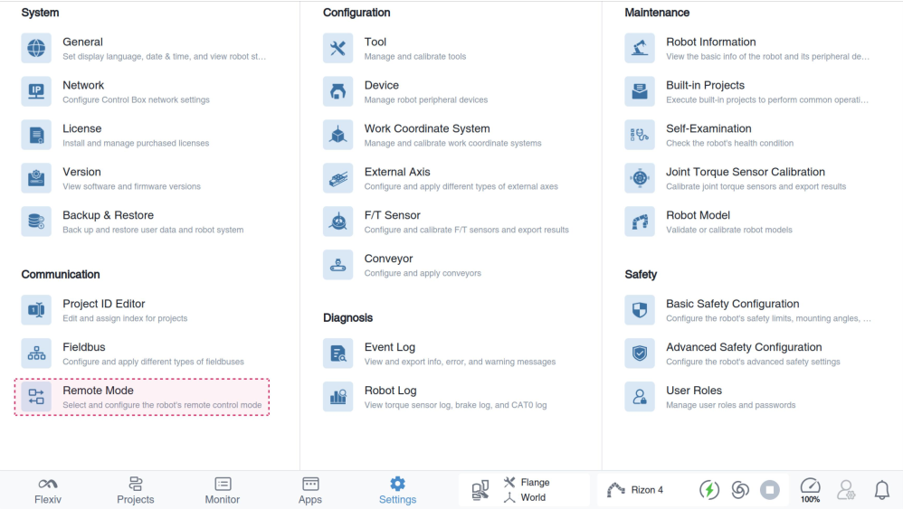
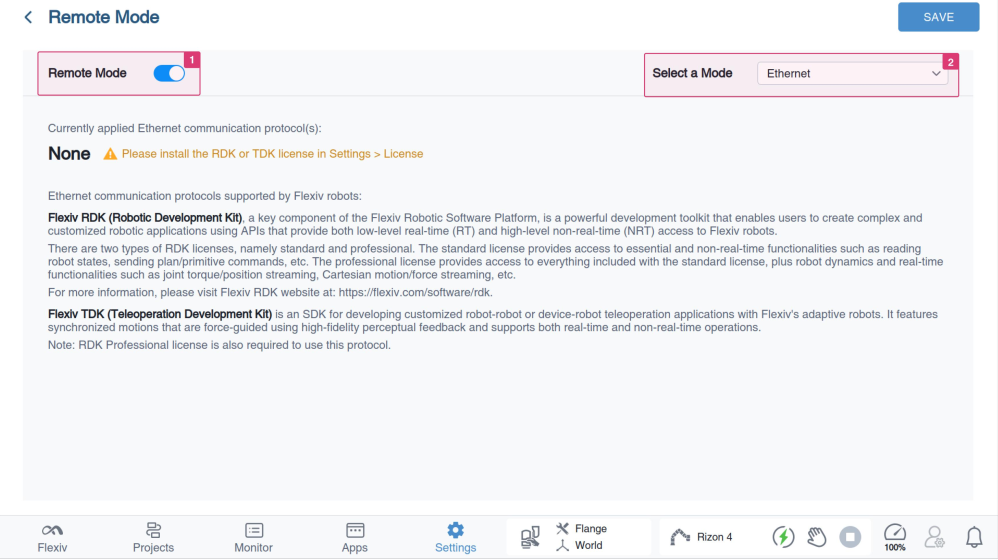
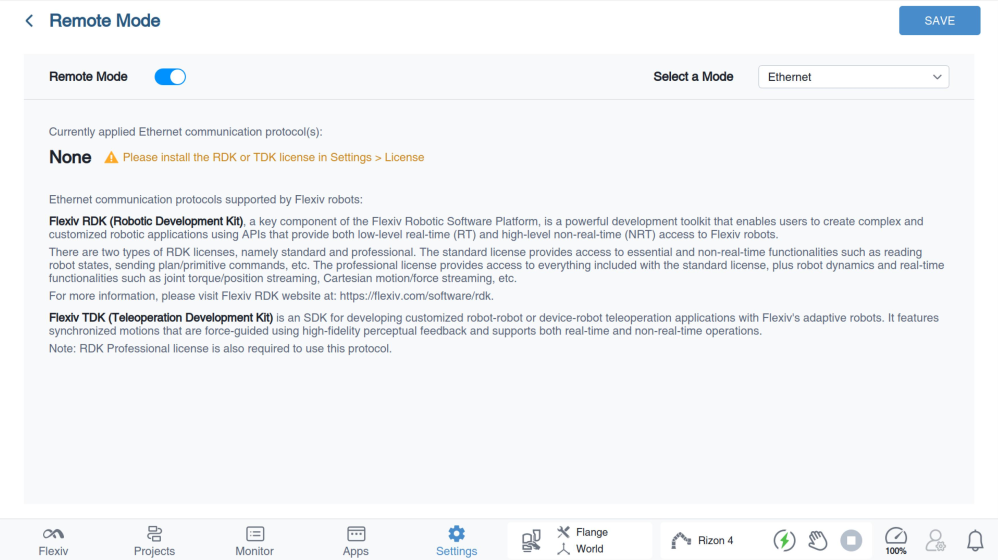
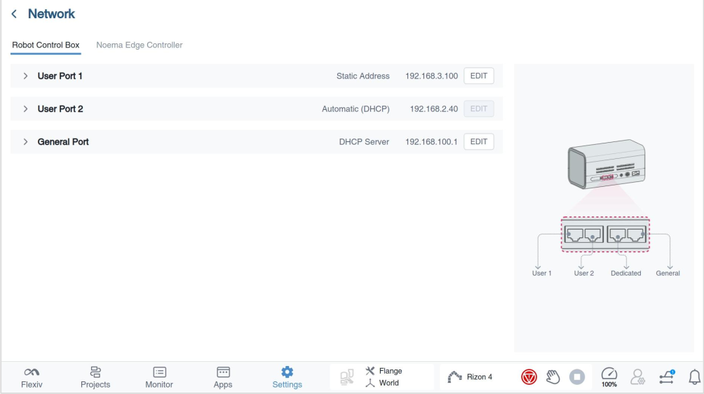

Robots setup and network configuration¶
Before using TDK, ensure that the robots are properly mounted and the network is correctly configured. TDK supports both local area network (LAN) and wide area network (WAN) deployments. The following section uses a LAN setup as an example to describe the network configuration for the robots and the user computer.
⚠️ Important¶
Please make sure all robots are well mounted on a fixed base and are powered on before proceeding to the next step.
Step 1: Power on and servo on the robots¶
Follow instructions in the provided Quick Start Guide to complete hardware setup and boot up the two robots. After booting up, connect the robots to the UI tablet (Flexiv Elements). All the light rings on the robots should be deep blue if they are powered on and servo on.
Step 2: Enable Remote Mode - Ethernet¶
Go to Settings > Remote Mode on the Flexiv Elements.

To enable Remote Mode, turn on the toggle, then select Ethernet from the Select a Mode drop-down list
View the currently applied Ethernet communication protocol(s). If no license has been installed, you can install the TDK license in Settings > License.

Step 3: Configure the network for leader robot and follower robot¶
The network configuration for the leader robot and follower robot can be done via the Flexiv Elements->Settings->Network.
Please refer to Flexiv Elements User Manual for more details.

For LAN teleoperation, please set both robots and the user's computer to the same network segment with different IP Addresses (e.g., leader robot: 192.168.2.110, follower robot: 192.168.2.111 and user PC:192.168.2.112. All configured with a subnet mask of 255.255.255.0).
Step 4: Reboot the robots and ping test¶
After configuring the network and remote mode, reboot the robots. Connect the user's computer and two robots to the same ethernet switch. Ping the two control boxes to make sure all the devices are connected properly.
WAN (Standard Edition)¶
WAN teleoperation uses NetworkCfgStd (TCP peer-to-peer). There is one robot and one edge computer on each side. One edge computer is the TCP server and the other is the TCP client. Either side may be the server.
The TCP client only needs Internet access. The TCP server also needs:
- NAT enabled on the router that the server edge computer is connected to (usually on by default).
- The private IPv4 address of the server edge computer, used for a TCP port-forwarding rule. The forwarded port is
listening_porton both sides. - The server's public IPv4 address (for example from https://whatismyipaddress.com/). Both sides must set the same
public_ipv4_address.
Example flags (see transparent_cartesian_teleop_wan):
-t server|client: TCP role-i <public_ip>: public IPv4 of the TCP server-p <port>: forwarded listening port (same on both sides)-A <lan_ipv4>: optional LAN IPv4 of the NIC connected to the robot-W <iface>: optional WAN interface name (for examplewlo1orenp3s0), not an IPv4 address. Repeatable.
Both sides of a pair must use the same public IPv4 and listening port. Synchronize the two edge computers' clocks before running WAN teleop; see Time Sync (WAN).